Transcode day
Trans_code Day 2015
Send to a friend

Share
Short link for this page:
http://gu.com/p/3bt9c
Contact us
- Report errors or inaccuracies: userhelp@theguardian.com
- Letters for publication should be sent to: guardian.letters@theguardian.com
- If you need help using the site: userhelp@theguardian.com
-
Call the main Guardian and Observer switchboard:
+44 (0)20 3353 2000
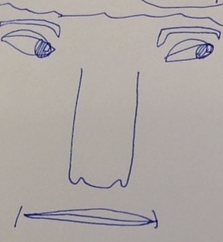
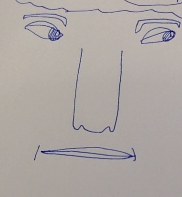
 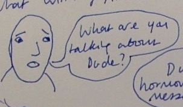
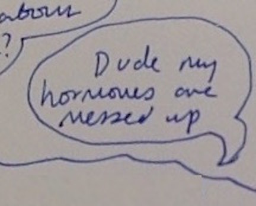
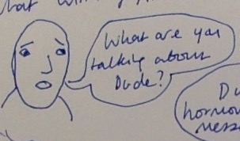
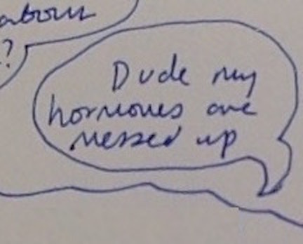
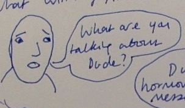
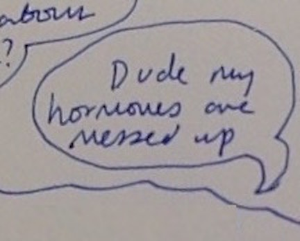
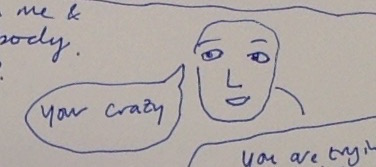
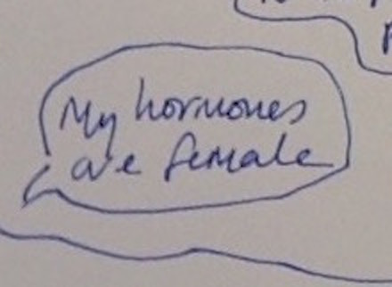
 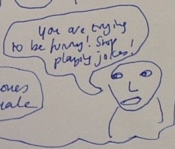
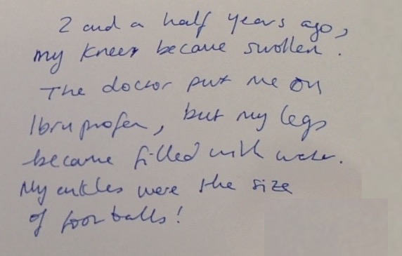
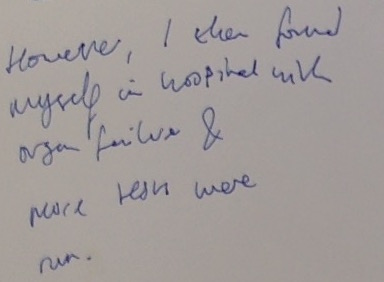
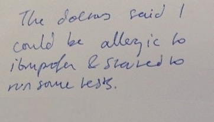
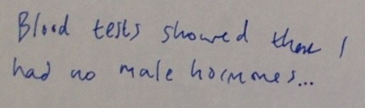
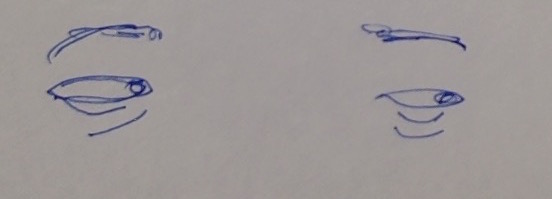
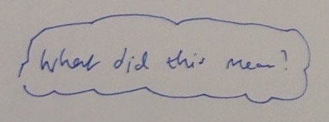
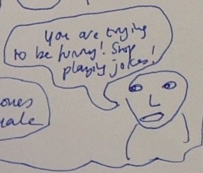
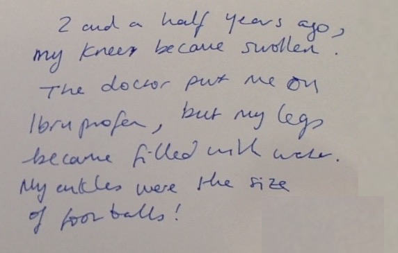
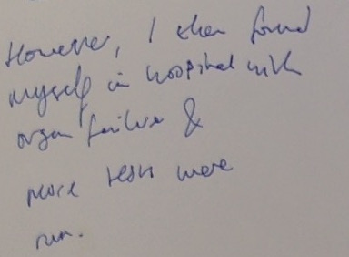
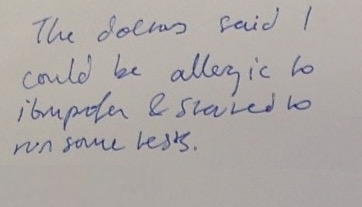
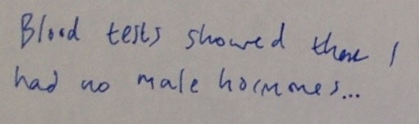
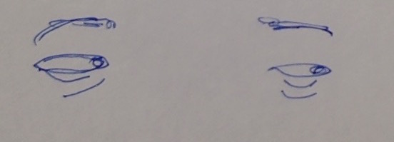
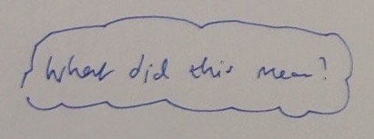